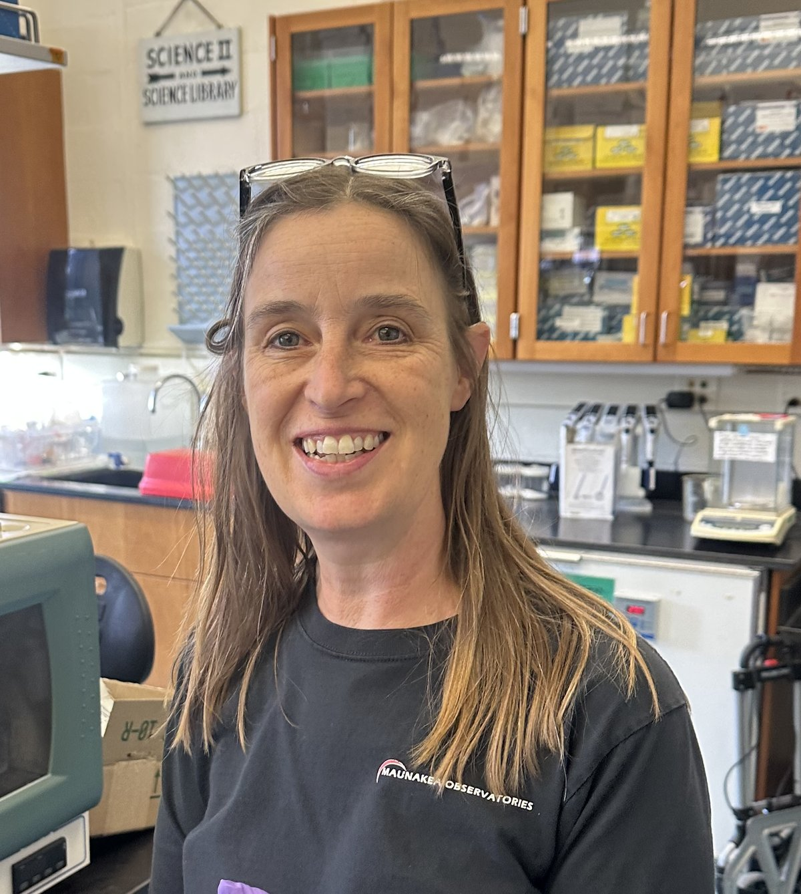
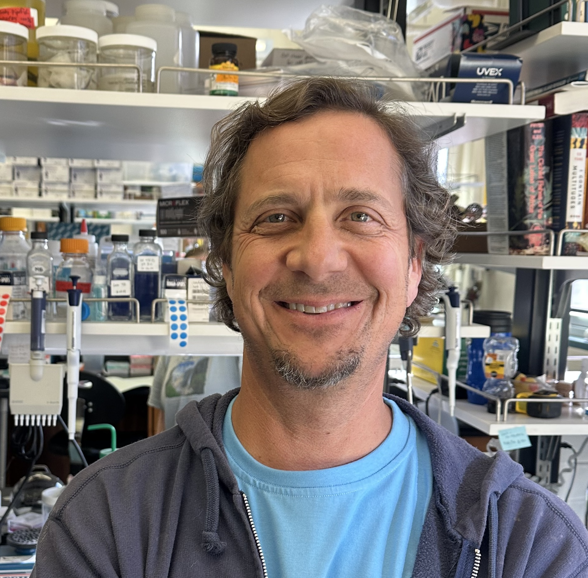
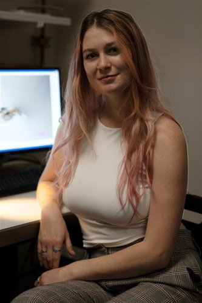
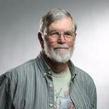
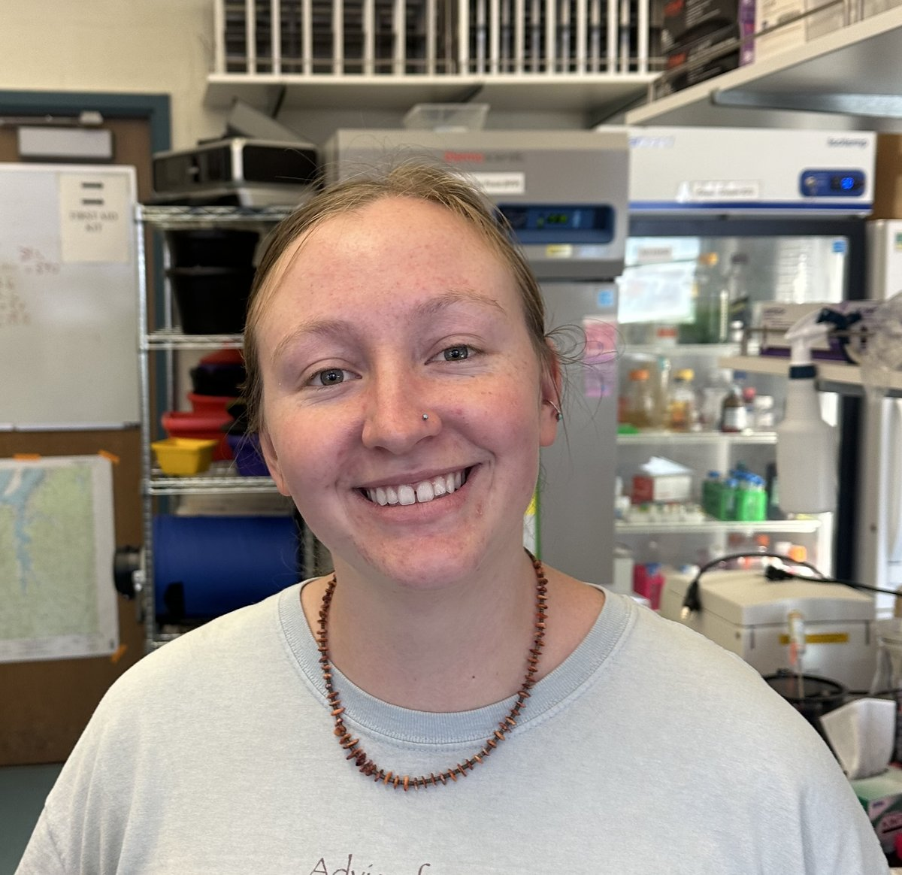
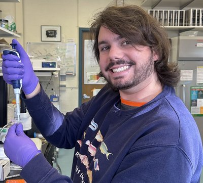

Present and Past Lab Members
Current Lab Members
William A. Cresko, Ph.D. - Principal Investigator

Lorry Lokey Chair and Professor of Bioengineering, Director Center for Biomedical Data Science
Institute of Ecology and Evolution
University of Oregon
Bill Cresko is Lorry Lokey Chair and Professor of Bioengineering, and a member of the Institute of Ecology and Evolution (IE2) at the University of Oregon. He has had leadership roles on campus as the director of IE2, associate vice president of research (2014-2018), and the executive director of the Presidential Initiative in Data Science (2018-2023). He is currently the UO Director of the Center for Biomedical Data Science. Cresko studies the genomic basis of evolutionary change using comparative studies of natural populations in the wild and experimental approaches in the laboratory. He uses the threespine stickleback fish as his primary model to understand how molecular genetic variation can modify networks of genes and proteins to produce variation in evolutionarily important traits.
Contact: wcresko@uoregon.edu
Full Profile | Google Scholar | ORCID
Susan (Susie) Bassham, Ph.D. - Senior Research Associate

Senior Research Associate
Institute of Ecology and Evolution
University of Oregon
Susie is interested in understanding the vast variety of life. How is morphological variation, seen in populations of the same species, partitioned among different environments and what are the genetic and genomic factors associated with this partitioning? She uses a variety of molecular genetic tools to uncover genome-scale patterns that underlie phenotypic variation in wild populations of fish, and directs this knowledge to the study of developmental pathways that contribute to novel or modified morphologies.
Contact: sbassham@uoregon.edu
Full Profile | Publications
Mark Currey, Ph.D. - Senior Research Scientist

Institute of Ecology and Evolution
University of Oregon
Mark’s research investigates the genetic and genomic basis of evolutionary change in natural populations. He uses computational approaches to analyze large-scale genomic datasets and understand patterns of genetic variation that contribute to adaptation and speciation.
Contact: mcurrey@uoregon.edu
Full Profile | Publications
Shannon Snyder - Graduate Student

Ph.D. Candidate
Department of Biology
University of Oregon
Shannon is a graduate student studying the transcriptional and epigenetic basis of transgenerational inheritence using the freshwater microcrustacean Daphnia. Shannon earned her undergraduate and Masters degrees at Arizona State University under the tutelage of Dr. Mike Lynch. Shannon was awarded support from the NIH T32 Genetics Training Program.
Contact: ssnyder3@uoregon.edu
Full Profile
Charles Kimmel - Zebrafish Researcher Extraordinaire

Emeritus Faculty
Department of Biology
University of Oregon
Chuck Kimmel is a Professor Emeritus who pioneered the use of zebrafish as a model organism for developmental biology. His groundbreaking work on vertebrate development has made zebrafish one of the most important model systems in biology. Chuck continues to collaborate with the Cresko Lab on projects involving craniofacial development and evolutionary developmental biology.
Contact: ckimmel@uoregon.edu
Lily Rice - Undergraduate Researcher

Undergraduate Student
Department of Biology
University of Oregon
Lily is an undergraduate researcher studying evolutionary genomics and adaptation in natural populations. She is gaining hands-on experience with molecular biology techniques and computational analysis of genomic data.
Contact: lrice@uoregon.edu
Bruno Belaforte - Undergraduate Researcher

Undergraduate Student
Department of Biology
University of Oregon
Bruno is an undergraduate researcher working on host-microbiome interactions and their role in adaptation. He is learning laboratory techniques and contributing to ongoing research projects in the lab.
Contact: bbelafort@uoregon.edu
Lab Alumni
Postdoctoral Scholars
- Bob Week, Ph.D. (2022-2025) - Supported by Moore Foundation Funding
- Veronica Oro, Ph.D. (2021-2024) - Supported by Providence-KCASI Fellowship
- Hannah Tavalire, Ph.D. (2017-2020) - Supported by Grant Funding. Now Research Associate at University of Oregon
- Martin Stervander, Ph.D. (2017-2020) - Postdoctoral Fellow. Martin was a postdoctoral research fellow on a three-year grant from the Swedish Research Council. In the Cresko Lab, he does research in comparative genomics of syngnathid fishes. With a background in phylogenetic and phylogenomic analyses of birds, his overall research interests span microevolutionary dynamics to large-scale macroevolution. He received his PhD at Lund University, Sweden, in 2015 with a thesis on speciation in birds. Full Profile
- Emily Beck, Ph.D. (2017-2020) - Postdoctoral Fellow supported by NIH Ruth Kirchstein NRSA Fellowship. Emily’s research focuses on the evolutionary genomics of adaptation in natural populations. She is particularly interested in understanding how genetic variation influences phenotypic diversity and adaptation to different environments. Her work combines population genomics, quantitative genetics, and experimental approaches to understand evolutionary processes. Now Assistant Research Professor at University of Oregon.
- Gavin Woodruff, Ph.D. (2015-2020) - Supported by Grant Funding
- Ann Petersen, Ph.D. (2014-2019) - Supported by Grant Funding
- Stacey Wagner, Ph.D. (2013-2018) - Supported by NIH Ruth Kirchstein NRSA Fellowship
- Clayton Small, Ph.D. (2012-2021) - Supported by Grant Funding. Now Assistant Research Professor at University of Oregon. Contact: csmall@uoregon.edu Research
- Rui Galvao, Ph.D. (2012-2015) - Supported by Grant Funding
- Roger Voelker, Ph.D. (2012-2013) - Supported by Grant Funding
- Kat Milligan-Myhre, Ph.D. (2009-2015) - Supported by NIH Ruth Kirchstein NRSA Fellowship. Now Assistant Professor at University of Alaska Anchorage
- Julian Catchen, Ph.D. (2009-2015) - Supported by NIH Ruth Kirchstein NRSA Fellowship. Now Associate Professor at University of Illinois Urbana-Champaign
- Susan Bassham, Ph.D. (2006-2011) - Supported by NIH Ruth Kirchstein NRSA Fellowship. Now Senior Research Associate at University of Oregon
- Paul Hohenlohe, Ph.D. (2005-2011) - Supported by NIH Ruth Kirchstein NRSA Fellowship. Now Professor at University of Idaho
Graduate Students
Ph.D. Students
- Caitlin Smith (2019-2024) - Supported by Grant Funding
- Hope Healey (2019-2024) - Supported by NIH Genetics Training Program (GTP). Full Profile
- Allison Fuiten (2012-2019) - Supported by NIH Developmental Training Program (DTP) and NSF DDIG
- Thom Nelson (2011-2017) - Supported by NIH Developmental Training Program (DTP) and NSF DDIG
- Kristin Alligood (2010-2017) - Supported by NIH Developmental Training Program (DTP) and NSF DDIG
- Emily Lescak (2010-2015) - Supported by Grant Funding. Now Assistant Professor at University of Alaska Anchorage
- Alida Gerritsen (2009-2015) - Supported by Grant Funding
- Kristin Sikkink (2007-2014) - Supported by NIH Genetics Training Program (GTP), NSF GRFP and NSF DDIG
- Conor O’Brien (2005-2011) - Supported by NSF IGERT and Grant Funding
- Sophia Frantz, Ph.D. - Sophia studied the role of Wolbachia infection in differential gene expression in Drosophila melanogaster.
Master’s Students
- Carla Campos (2023-2024) - Supported by NSF GRFP
- Sophia Frantz (2019-2021) - Supported by Grant Funding. Studied the role of Wolbachia infection in differential gene expression in Drosophila melanogaster
- Roberta Torunsky (2011-2013) - Supported by Grant Funding
- Mark Currey (2010-2014) - Supported by Grant Funding. Now Senior Research Scientist at University of Oregon
- Andrew Nishida (2009-2014) - Supported by Grant Funding
- Kimberly Lum (2007-2010) - Supported by Grant Funding
- Quick Yeates-Burghart (2006-2009) - Supported by Grant Funding
- Robert Steury - Now working at Steury Stonework and Design
Post-Baccalaureate Scholar
- Jillian Vogel (2024-2025) - Jillian was a postdoctoral scholar in the laboratory.
- Hayden Penn (2024-2025) - Post-baccalaureate Scholar
- Micah Woods (2023-2024) - Micah assisted with a range of projects throughout the lab. Before their role as a Post-Baccalaureate Scholar, they worked as a Knight Campus Undergraduate Scholar exploring gene expression in craniofacial development of zebrafish, stickleback, and pipefish using in situ hybridization. They wrote, defended, and earned the Robert D. Clark Award for their thesis in philosophy of biology. Recently published in Ms. Magazine highlighting the contributions of Dr. Kata Karáth. Full Profile
Undergraduate Researchers
Undergraduate Honors Students (Clark Honors College and Biology)
- Walker Meyer (2021-2024) - Knight Campus Undergraduate Scholar. Walker explored the genetic basis of adaptation in stickleback populations. He was chosen as a Knight Campus Undergraduate Scholar in support of his research.
- Vithika Goyal (2020-2024) - Hui Undergraduate Scholar. Vithika is studying genetic diversity in natural populations. She was recently awarded a Hui Fellowship to support her research.
- Micah Woods (2020-2023) - Clark Honors College & Knight Campus Undergraduate Scholar
- Emily Niebergall (2017-2020) - Clark Honors College & Biology Honors, Knight Campus Scholar. Graduated with Honors, awarded Goldwater Scholarship
- Jack Peplinski (2016-2018) - Clark Honors College & Biology Honors. Graduated with Honors
- John Crandall (2015-2018) - Clark Honors College & Biology Honors. Graduated with Highest Honors
- Sophie Sichel (2014-2015) - Biology Honors. Graduated with Honors
- Taylor Wilson (2010-2012) - Clark Honors College & Biology Honors. Graduated with Highest Honors
- Kate Ituarte (2010-2012) - Clark Honors College & Biology Honors. Graduated with Highest Honors
- Robin Brown (2009-2010) - Clark Honors College & Biology Honors. Graduated with Honors
- Ryan Bourdo (2008-2010) - Clark Honors College & Biology Honors. Graduated with Honors
- Larissa Unruh (2007-2009) - Clark Honors College & Biology Honors. Graduated with Honors
- Emily Armstrong Buck (2006-2008) - Clark Honors College & Biology Honors. Graduated with Honors
Other Undergraduate Researchers
The Cresko Lab has mentored 77 undergraduate researchers since 2004, including 23 students from populations underrepresented in science. Notable alumni include:
- Jared Galloway - Now Bioinformatics Scientist
- Nicole Nishimura - Research Assistant (2008-2012)
- Frances Sung - Research Assistant (2005-2008)
- Joe Dunham - Research Assistant (2005-2008)
- Nia Harper - Undergraduate Researcher
- Jade Kast - Undergraduate Researcher
- Erik Parker - Undergraduate Researcher
- Shira Mali - Undergraduate Researcher
- John Letaw - Undergraduate Researcher
- Maya Rommwatt - Undergraduate Researcher
- Steve Perry - Undergraduate Researcher
- James Bolle - Undergraduate Researcher
- Jenna Wood - Undergraduate Researcher
- Jessica Ava - Undergraduate Researcher
- Emma Kostin-Conley - Undergraduate Researcher
- Caroline Emui-Wei - Undergraduate Researcher
Students from Underrepresented Groups: Shannon Cannon, Ethan Contreras, Byron Etta, Linda Gai, Kyle Gonsalves, Vithika Goyal, Shanie Jorgensen, Jamie Kim, Taylor Lipscomb, Clayton Merz, Sara Phillips, Natasha Richardson, Mary Sherbick, Micah Woods
High School Student Researchers
- Jaime Kim - Sheldon High School
- Andrew Russo - South Eugene High School
- Tommy Yates - Sheldon High School
Research Associates and Sabbatical Visitors
- Emily Beck, Ph.D. (2021-present) - Assistant Research Professor
- Clay Small, Ph.D. (2021-present) - Assistant Research Professor
- Chuck Kimmel, Ph.D. (2020-present) - Professor Emeritus
- Susan Bassham, Ph.D. (2011-present) - Senior Research Associate
- Bob Kaplan (2008) - Sabbatical Faculty from Reed College
- Beren Robinson (2006) - Sabbatical Faculty from Guelph University
Research Assistants
- Tiffany Thornton (2021-2023) - Research Assistant
- Rene Hsu (2020-2023) - Research Assistant
- Kate Ituarte (2012-2014) - Research Assistant
- Nicholas Stiffler - Research Assistant, Now Software Developer at University of Oregon
- Nicole Nishimura (2008-2012) - Research Assistant
- Jason Sydes - Research Assistant, Now Research Assistant in Postlethwait Lab at University of Oregon
- Frances Sung (2005-2008) - Research Assistant
- Joe Dunham (2005-2008) - Research Assistant
Join Our Team
If you are interested in joining the Cresko Lab as an undergraduate researcher, graduate student, or postdoctoral scholar, please read our recent publications and then email Dr. Cresko with your CV and a statement of research interests.
Current Opportunities:
- Graduate student positions available for Fall 2025
- Undergraduate research opportunities through the Knight Campus Undergraduate Scholars program
- Post-baccalaureate positions may be available - please inquire
Contact: wcresko@uoregon.edu